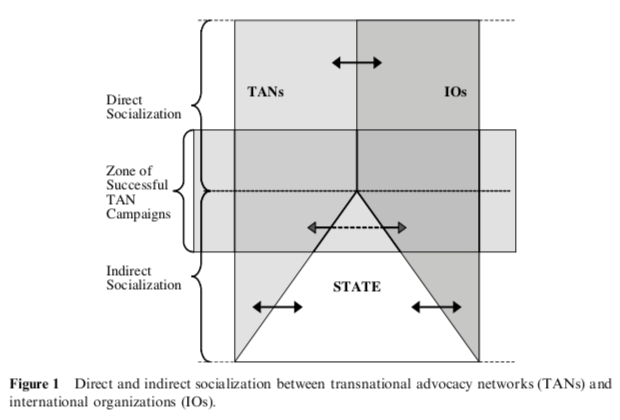
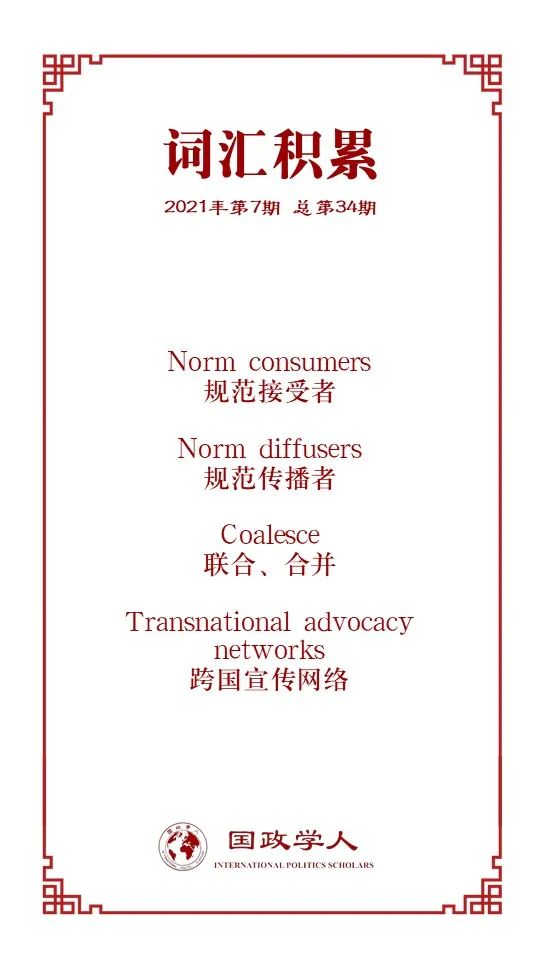

收录于合集

作品简介
【作者】 Susan Park，悉尼大学国际关系学教授，研究领域包括全球治理、多边开发银行、建构主义理论、国际经济组织、全球环境政治等。她主持过第五届大洋洲国际关系研究会议，并曾在新南威尔士大学任教。
【编译】 王嘉许（国政学人编译员，复旦大学国际政治系）
【校对】 崔宇涵
【审核】 张彦赪
【排版】 秦子宁
【美编 】杜丛竹
【来源】 Park, S. (2005). Norm diffusion within international organizations: a case study of the World Bank. Journal of international relations and development , 8(2), 111-141.
期刊简介
《国际关系与发展》期刊（ Journal of International Relations and Development ）创立于1984年，是专注区域研究的全球刊物，也是中欧与东欧国际研究协会的官方期刊。该期刊关注对国际关系和国际政治经济现有问题的理论及实证分析。该期刊2019年的影响因子为2.028。
Susan Park
**** 国际组织内部的规范传播：
以世界银行为例
Norm diffusion within international organizations: a case study of the World Bank
内容提要
建构主义者往往认为，国际组织（IOs）将规范传播到整个国际体系中。本文则提出这样一个问题：如果国际组织负责在全球政治中传播特定规范，那么这些规范究竟从何而来呢？具体来说，本文旨在阐述国际组织身份出现的过程，尤其是在环境这种理性主义难以解释的领域。本文假定，国际组织与非国家行为者（如跨国宣传网络）进行互动并消化规范，而这种过程往往被建构主义的分析所忽视。本文将对世界银行进行案例研究，展现世界银行在跨国宣传网络（transnational advocacy networks）的影响下，直接与间接地实现社会化，向可持续发展转变的过程。本文认为，世界银行在这种互动中的角色不仅仅是被动的、工具化的，因此建构主义者需要在将国际组织视为规范传播者的同时，注意其作为规范接受者的作用。
【关键词】 建构主义，环境，国际组织，非政府组织，世界银行
文章导读
01
引言
建构主义者指出，国际组织在整个国际体系内起到规范传播者的作用。国际组织在社会发展、环境、人权、性别平等和科学等不同领域推动变革。然而，一些相关国际组织的研究指出，国际组织并不总是按照最有效或最理想的方式运作。事实上，它们的运作方式并非如国家们最初成立国际组织时所愿。国际组织在诠释并落实其授权任务上有不同的方式，而其背后的原因和具体实施需要进行深入的分析。对此，建构主义者认为国际组织不仅受到国家影响，也被非国家行为体所塑造。本文将首先阐述建构主义视国际组织为规范传播者（norm diffusers）的观点，其次，文章对这个观点加以补充，解释国际组织在传播规范的同时也是受到非国家行为体塑造的规范消费者。本文将对世界银行进行案例研究，表明其在环境问题上的身份变化，来证明非国家行为体，即跨国宣传网络促成了国际组织的社会化。跨国宣传网络试图通过直接和间接的社会化过程来影响国际组织，例如世界银行的项目、政策和运作机制。这些分析将阐明直接和间接的社会化过程如何影响并重构了国际组织的身份，以及国际组织与非国家行为体之间的关系在对于理解国际体系内的变化的重要性。
02
规范来自何处？
本文聚焦于非国家行为体在互动过程中生产并加强规范方面的作用。非政府组织（NGOs）和跨国宣传网络的目的是通过重塑国际体系中的行为和具体实践，来贴合其共同理念或价值观。虽然部分国际组织和国家可能本就认同跨国宣传网络的价值观，但是政府和非政府组织之间在组织架构上的决定性差异导致了二者在面对意识形态挑战时的根本差别。因此，非政府组织经常通过跨国宣传网络凝聚力量，来推动改革。但政府间组织则不同，共同身份才是驱动政府间组织采取行动的力量。政府间组织内部的变化来源于该组织对国际体系规范整体理解的变化，而非个体的改革努力。本文提出的观点是：国际组织所认同的规范不仅是国家权力的结果，也是它们被非国家行为体，尤其是跨国宣传网络社会化的结果。此外，国家也会在这个过程中被间接地社会化，因为通过国际组织在国际体系中所推广的规范也将进一步影响国家。

图1 跨国宣传网络与国际组织之间直接与间接社会化的过程
可见，国际组织基于两个基本要素来落实其授权职责：它们的身份以及国际体系内规范的影响。第一，身份对于理解国际组织如何运作至关重要。国家对国际组织任务、范围与职能的界定有助于身份认同的确立。第二，规范的影响超出了理性主义的观念，不能仅仅把国际组织的行动归结于国家的需求。相反，本文将重点放在国际组织对一个更广泛社会环境的反应中，对国际组织所传播的规范的出处进行研究。国际组织不仅像人们通常认为的那样受到成员国的影响，还受到其所在的国际社会结构影响，在这一过程中，它们的行动及其身份也发生了变化。国际组织与非国家行为体相互建构所导致的变化过程即为社会化。社会化是接受者将其观念内化为其身份的过程，而这些身份又是其所处社会结构的构成要素。总而言之，本文认为规范决定了一个国际组织将如何行动，而国际组织如何内化这些规范，必然由其身份决定。
为了理解国际组织从非政府组织和跨国宣传网络中获取规范的方式，本文梳理了两种社会化途径：直接社会化与间接社会化。跨国宣传网络在微观层面上参与社会化，以通过国际体系传播规范，重新构建国际组织的身份。然而，国际组织并不仅仅在顺应所处的社会结构，也会通过反应和行动对其进行塑造。
直接社会化是指非国家行为体与世界银行等国际组织互动，并试图对其施加影响。具体措施包括通过会议、信件、电子邮件和电话等进行说服，或在国际组织的项目现场、办公室或总部进行示威、抗议和请愿。而间接的社会化被理解为成员国先通过游说（强制施压），再参与对话（劝说），从而影响国际组织的过程（见图1）。跨国宣传网络也会通过影响强国来间接影响国际组织，以推广可持续发展规范。这两种过程在国际组织更广泛的社会化过程中都是必要的。在这种情况下，社会化涉及对国际组织行为的挑战与改造，以建立国际组织、国家和跨国宣传网络之间的共同理念，涉及到通过将新的规范内化为理念和实践来重构国际组织的身份。在世界银行的案例中，它已经将自己视为了可持续发展的实践者，下文将展开详细阐述。
03
世界银行获取可持续发
展 规范的案例
为了理解国际组织和非国家行为体之间的社会化过程，本文选取世界银行作为案例进行研究。世界银行在其规范上的发展影响了大量国家，同时也展现了其国际组织机构的范围与职能。从20世纪80年代中期以来，世界银行大大改变了其贷款模式，实现了身份变化，将可持续发展的规范内化。
针对世界银行的分析大多在解释非国家行为体，例如非政府组织，是如何施压世界银行使其采取与最初发展理念完全对立的措施，例如环境和人权议题。这些互动为论证世界银行已经开始内化可持续发展理念提供了基础。本文的案例研究将尝试论证，由于20年来与跨国宣传网络的不断互动，世界银行从只注重业绩、“收益第一”的发展方式转变为了环境友好的“无害”方式。这一转变最初是对美国施加压力的一种战术性回应，仍需要通过进一步的“环境议题主流化”来巩固其转变。这种转变已经有效确立了世界银行以经济发展、扶贫和环境为支柱的身份。下文将详细说明跨国宣传网络是如何通过直接和间接的过程促进世界银行社会化的。这些过程在世界银行的问题项目、环境和社会问责机制的建立中得到了体现。当新的发展规范（可持续发展）被内化为世界银行的自我认知时，社会化的过程就已经完成。
04
针对“问题项目”的社会运动
这一部分简述了三个对世界银行自我认知造成深远影响的“问题项目”，展现了跨国宣传网络使可持续发展议题进入世界银行议程的方式：通过社会影响力、劝说和游说将“问题项目”政治化。
第一个案例是由巴西Polonoroeste项目引发的“多边开发银行”（MDB）改革运动。Polonoroeste由世界银行提供部分资助，旨在将亚马逊热带雨林变为耕地和牧场，并在巴西西北部进行道路建设，而这将造成严重的环境危害。对于世界银行来说，这一项目是其推广新环境标准的机会。针对这一项目的社会运动包含了以下三种手段：第一，公布有关世界银行的案例研究，来宣传世界银行是怎样导致了巴西、印度和印度尼西亚的自然灾害。这种手段即为直接的社会化。第二，将世界银行的行为通报给美国国会，再通过美国国会来影响世界银行，即间接的社会化。第三，提升媒体关注度。南半球和北半球的非政府组织通过在社会运动中的共同利益与目标进行联盟，增强自身实力，并不断针对美国国会进行游说。作为在世界银行投资项目上最具影响力的出资方，美国国会的听证会极为重要，而这给了跨国宣传网络游说国会的机会，要求其要么削减资金，要么对世界银行的资金使用加以规制，使其更加环保。
第二个案例是针对印度Narmada Sader Sarovar项目的抗议运动。印度当地的居民与华盛顿的示威者进行了协调，迫使世界银行首次对项目进行了独立审查，称印度政策正向着环保的方向进步，来回应压力。但跨国宣传网络对这一表态并不满意，并再次利用了在媒体上的影响力，而部分成员国的执行董事也要求项目暂停。最终，印度取消了Narmada Sader Sarovar项目，成为了世界银行历史上第一个因环境问题被取消的项目。
第三个案例是针对尼泊尔Arun III项目的抗议运动。在这次最为成功的运动中，跨国宣传网络运用了“直接社会化”的手段，例如通过在网上传播项目对环境的危害来产生社会影响、通过邮件与信件说服世界银行工作人员、直接劝说执行主管反对项目等。这些方法不仅获得了公众注意，也激起了世界银行内部的抗议，甚至有高级别官员以辞职作为威胁。因此，Arun III项目最终受到了监察组的审查，组长最终裁定世界银行必须立刻取消项目。抗议运动的直接收获在于，国际社会针对问题项目出现了一种“预警机制”，甚至可以在项目开始之前就进行干预，避免任何潜在的破坏发生。不断强化的跨国宣传网络，世界银行内部的反对以及监察组的成立共同实现了这一转变。
05
环保与信息披露政策
如前所述，跨国宣传网络对美国国会的游说是最能影响世界银行的方式。下文将阐述世界银行在“星期二小组” （Tuesday Group）影响下进行重构的过程。星期二小组是佩洛西修正案(Pelosi amendment)的结果，于1989年开始对美国国际开发署资助的世界银行项目进行监控。美国的执行主管也会反对不符合规定的项目。“星期二小组”由美国环境保护局、美国国际开发署、财政部和环境宣传网络下的非政府组织组成，并定期举行会议，形成了稳定的预警机制。与此同时，美国财政部也共同对世界银行进行施压，要求美国执行主管确保世界银行内部对项目进行环境评估。由此，非政府组织也间接地通过美国政府将环保理念嵌入了世界银行的规章之中。1991年，世界银行出台了修订版的行动指南，要求必须将项目的环境影响告知当地民众，并同意在实施项目之前进行信息公开，使组织更为负责和透明。最终，跨国宣传网络通过说服美国政府各关键部门，迫使世界银行建立了环境问责机制，并成立监察组，使受影响的民众能够寻求救济。
06
监察组的成立
世界银行在1993年成立了监察组（Inspection Panel），来调查关于不遵守环保措施的指控。这个小组由世界银行自己创建，来回应跨国宣传网络的间接社会化，对受世界银行资助项目影响的人负起责任。在本文的案例中，跨国宣传网络发挥了关键作用，将世界银行贷款这个问题政治化，并通过影响美国国会建立了世界银行监察组。跨国宣传网络还向美国财政部和执行董事会提供了具体的运行建议，确立了监察组存在的必要性。
监察组开创了国际组织的先例。虽然监察组在实践过程中仍会受到董事会的限制，但它是历史上第一个迫使国际组织对受影响个人负责的机制。监察组的存在让世界银行与跨国宣传网络之间加强了沟通，实现了世界银行内部的体制变革，增强了环境保护理念，为世界银行创造了新身份。
因此，世界银行在项目、政策、机制与发展方向上的整体转变表明，跨国宣传网络有助于塑造国际组织的身份，并清楚地突显了非国家行为体在重构国际组织上的作用。世界银行的变化不仅来自于美国压力，也作为可持续发展的领导者实现了身份转变。
07
结语
本文分析了世界银行内部的三个重要组成部分：项目、政策与问责机制，来说明国际组织受到跨国宣传网络影响的方式。跨国宣传网络等非国家行为体在国际政治中发挥着重要作用，塑造了在可持续发展与环境等相关议题上的共同理解。这种塑造是跨国宣传网络通过直接和间接的社会化达成的，其中包括了三种微观模式：劝说、社会影响以及强制性游说。针对世界银行的身份转变，本文问题的核心在于：跨国宣传网络是如何塑造了世界银行的身份，使其内化另一种发展规范？如果非国家行为体能够影响国际组织的行动，也就能塑造国际组织的身份，并使得这些规范通过国际组织进一步扩散到整个国际体系。此外，如果跨国宣传网络等非国家行为体能通过具有不同身份的组织传播国际规范，那么“规范集团”的力量就更值得我们注意，并通过进一步的研究来探索国际组织内部的规范传播过程。
译者评述
本文突破了传统的建构主义观点，探讨了几个新问题：国际组织所传播的规范从何而来？国际组织的身份认同又是如何出现的？通过对世界银行投资项目的案例研究，Susan Park提出，国际组织可以通过间接与直接的方式进行社会化，而跨国宣传网络在这一过程中发挥着重要作用。建构主义者需要重新审视国际组织在作为规范传播者的同时，接受和转化规范的作用。需要注意的是，世界银行的官僚文化也会使其开始规避跨国宣传网络的抗议。年长的管理人员，尤其是项目管理者，正在努力避免将环境规范内化，而年轻的员工则认为可持续发展必须成为世界影响开展业务时的指导思想。这种内部差异使得世界银行的身份也存在一定的不稳定性。
词汇整理

文章观点不代表本平台观点，本平台评译分享的文章均出于专业学习之用, 不以任何盈利为目的，内容主要呈现对原文的介绍，原文内容请通过各高校购买的数据库自行下载。
好好学习，天天“在看”
国政学人
支持学术公益与知识传播
微信扫一扫赞赏作者 __赞赏
已喜欢，对作者说句悄悄话
取消 __
发送给作者
发送
最多40字，当前共字
上一页 1/3 下一页
长按二维码向我转账
支持学术公益与知识传播
受苹果公司新规定影响，微信 iOS 版的赞赏功能被关闭，可通过二维码转账支持公众号。